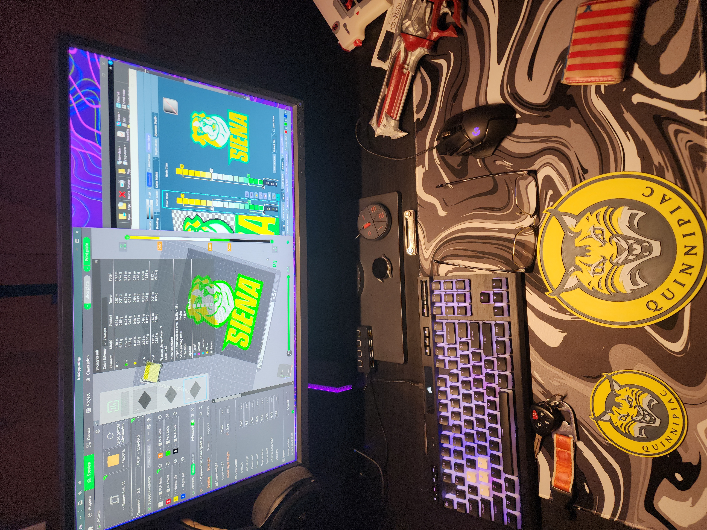
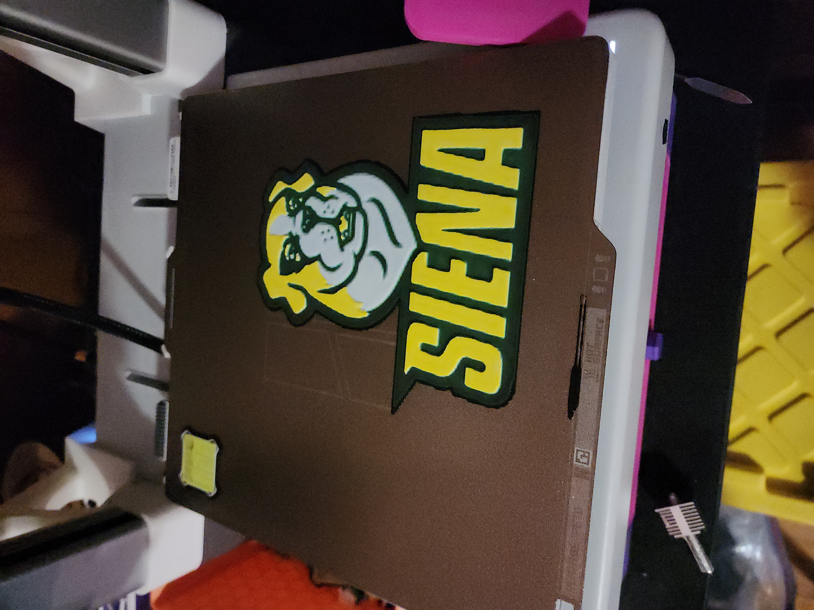
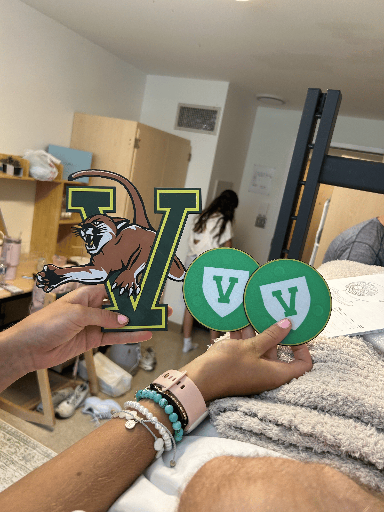

College Logos
July 2025

These college logos were 3D printed using HueForge software
They were made as gifts for college graduation parties.
Ideally, I would not use HueForge for these gifts. But, I did not have the correct colors of filament and I am also limited to only printing four colors at once. HueForge modelling allowed me to blend my blue filament with a black background to achieve the blue color that is normally found in Quinnipiac University's logo.
Additionally, to make the University of Vermont logo, I added a manual pause on a specific layer of the print. Then, I physically changed out the roll of filament from black to green. This allowed the print to have five colors. I quickly tried making coasters as well; they aren't great looking but it's the thought that counts.
Extra pictures from the design process


